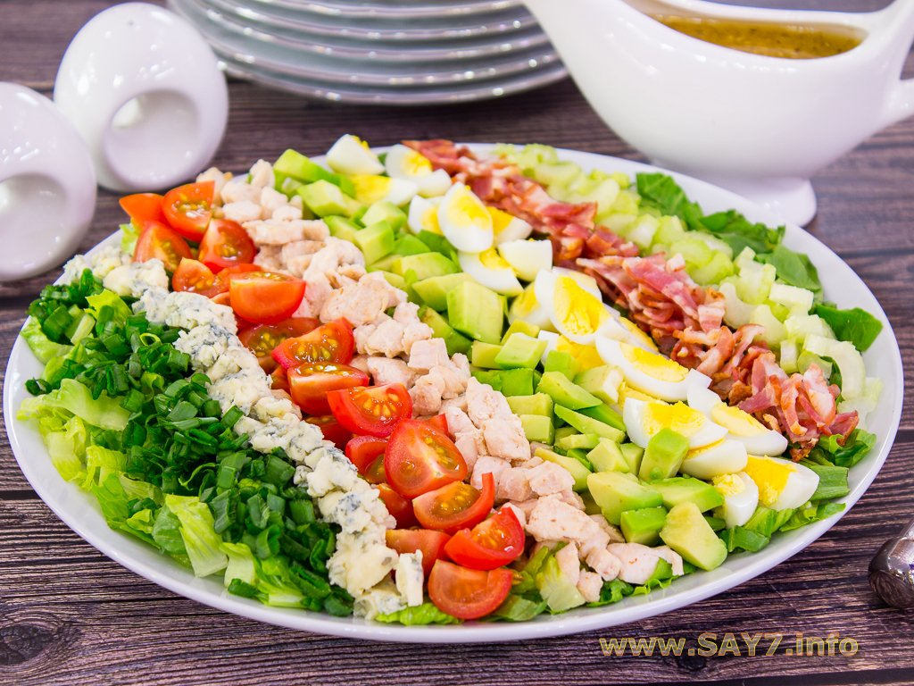
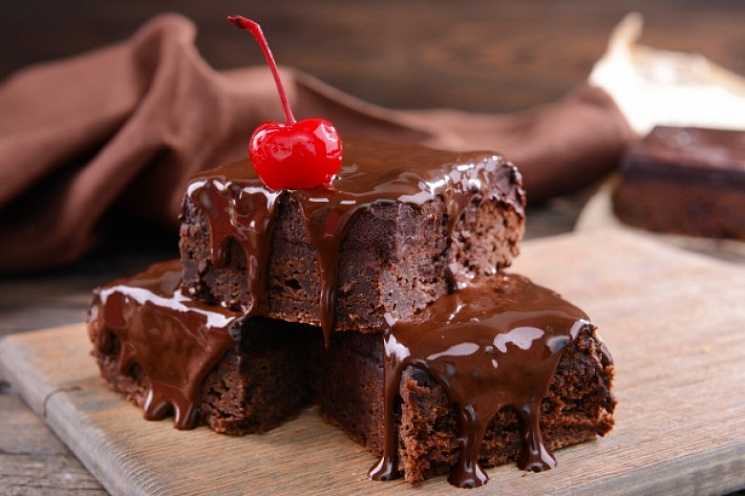

Подборки рецептов
В этом разделе мы собрали для вас тематические подборки блюд. Выбирайте по настроению или случаю.
Суп для обеда

Сытные и ароматные супы — идеальное решение для полноценного обеда. В этой подборке вы найдете как легкие овощные бульоны, так и наваристые крем-супы. Они отлично согревают в холодное время года и заряжают энергией на весь день. Попробуйте приготовить тыквенный суп-пюре или классическую солянку с капустой.
Салат

Лёгкие и полезные салаты станут прекрасным дополнением к любому приему пищи. Они богаты витаминами и клетчаткой, а готовятся очень быстро. В этой подборке собраны рецепты из свежих овощей, зелени и заправок на любой вкус. Здесь есть как простые салаты, которые можно сделать за пять минут, так и более сытные варианты с добавлением мяса или сыра.
Десерты

Сладкие десерты — это лучший способ завершить любой прием пищи или порадовать себя в течение дня. В этой подборке собраны рецепты невероятно вкусных и красивых сладостей: от легких фруктовых салатов и муссов до сытных шоколадных брауни и чизкейков. Многие десерты можно приготовить без выпечки, что значительно экономит время.